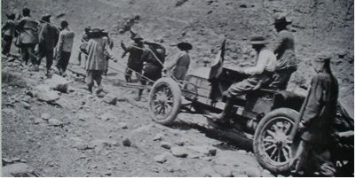
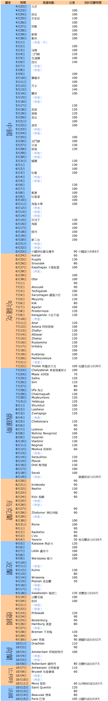

關於BTP 活動緣起與目的 活動內容與期程規劃 活動效益 薛德瑞簡介 環境品質文教基金會簡介
關於BTP 活動緣起與目的 活動內容與期程規劃 活動效益 薛德瑞簡介 環境品質文教基金會簡介
活動內容與期程規劃
BTP活動源起
距今一百年前的1907年，有人提出了一個活動的建議－「以汽車的方式完成從北京到巴黎的旅行」，在那個年代，這一趟旅行很多地方連道路都還沒有修築好，更別提加油站之類的補給，所以雖然說是以汽車來進行旅行，但很多時候都是用人力的方式來拉車。當年6月10日，五輛汽車從北京出發，藉由這個活動來宣告汽車時代的來臨。

一百年後的今天，在面臨空前氣候巨變的二十一世紀，有人提出了新的想法，同樣的路線，但是不使用動力交通工具，而要靠自己的腳騎著單車完成北京到巴黎的旅行，不製造空氣污染，不排放製造溫室效應的廢氣，降低能源消耗，以最環保的純人力－單車來前進，藉以喚醒世人對減緩地球溫室效應的重視。
活動路線規劃
此次活動將由台北轉赴北京後，從北京的天壇出發，騎絲路橫跨中國，從烏魯木齊進入中亞的哈薩克，經由莫斯科穿過俄國，騎往東歐的烏克蘭，進入歐盟的波蘭、德國穿越荷蘭、比利時，抵達法國巴黎的艾菲爾鐵塔 。
這趟行程估計長達15000公里，需費時6個月的時間來完成，為了突顯活動的環保意義，預計出發時間已選定於2007年4月22日「世界地球日」。
以一日平均80~120公里的距離騎乘，暫定行程規劃如下：


活動實況報導
本次挑戰行動全程實況，將由以下方式報導：
1. 舉辦行前與返國活動記者會。
2. 環境品質文教基金會網站以網誌形式報導，並與相關社群網站聯播。
3. 定期發佈新聞說明，由國內媒體協助報導，彰顯本次活動環保意識。
4. 定期發佈英文新聞說明稿，提升活動宣導國際能見度。
5. 洽請特定媒體以專題報導方式連載遊記。
6. 活動完成後發行全程實況網誌。